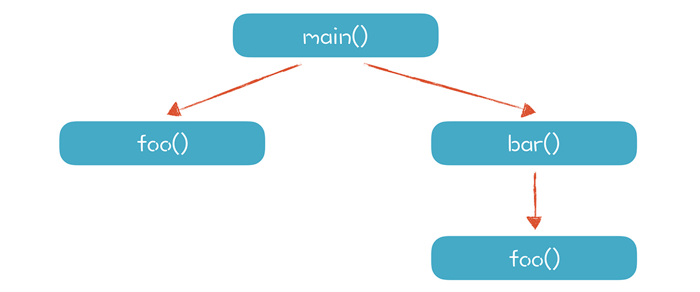
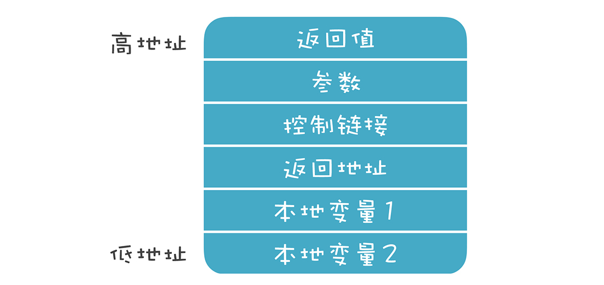
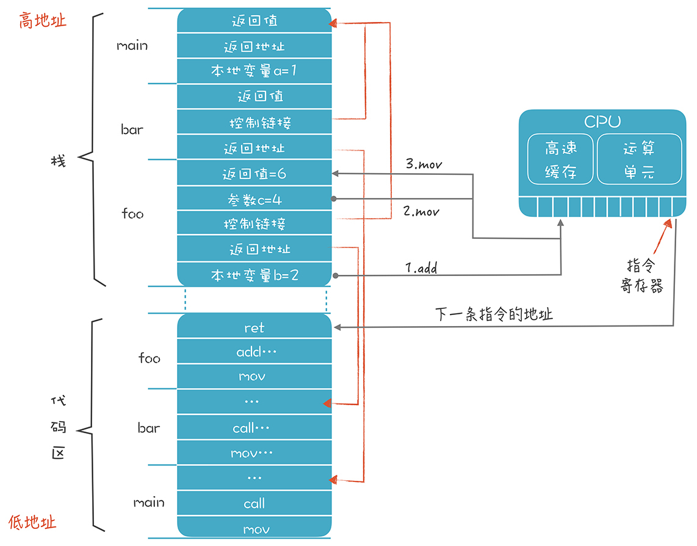

- 00 开篇词 为什么你要学习编译原理？.md.html
- 01 理解代码：编译器的前端技术.md.html
- 02 正则文法和有限自动机：纯手工打造词法分析器.md.html
- 03 语法分析（一）：纯手工打造公式计算器.md.html
- 04 语法分析（二）：解决二元表达式中的难点.md.html
- 05 语法分析（三）：实现一门简单的脚本语言.md.html
- 06 编译器前端工具（一）：用Antlr生成词法、语法分析器.md.html
- 07 编译器前端工具（二）：用Antlr重构脚本语言.md.html
- 08 作用域和生存期：实现块作用域和函数.md.html
- 09 面向对象：实现数据和方法的封装.md.html
- 10 闭包： 理解了原理，它就不反直觉了.md.html
- 11 语义分析（上）：如何建立一个完善的类型系统？.md.html
- 12 语义分析（下）：如何做上下文相关情况的处理？.md.html
- 13 继承和多态：面向对象运行期的动态特性.md.html
- 14 前端技术应用（一）：如何透明地支持数据库分库分表？.md.html
- 15 前端技术应用（二）：如何设计一个报表工具？.md.html
- 16 NFA和DFA：如何自己实现一个正则表达式工具？.md.html
- 17 First和Follow集合：用LL算法推演一个实例.md.html
- 18 移进和规约：用LR算法推演一个实例.md.html
- 19 案例总结与热点问题答疑：对于左递归的语法，为什么我的推导不是左递归的？.md.html
- 20 高效运行：编译器的后端技术.md.html
- 21 运行时机制：突破现象看本质，透过语法看运行时.md.html
- 22 生成汇编代码（一）：汇编语言其实不难学.md.html
- 23 生成汇编代码（二）：把脚本编译成可执行文件.md.html
- 24 中间代码：兼容不同的语言和硬件.md.html
- 25 后端技术的重用：LLVM不仅仅让你高效.md.html
- 26 生成IR：实现静态编译的语言.md.html
- 27 代码优化：为什么你的代码比他的更高效？.md.html
- 28 数据流分析：你写的程序，它更懂.md.html
- 29 目标代码的生成和优化（一）：如何适应各种硬件架构？.md.html
- 30 目标代码的生成和优化（二）：如何适应各种硬件架构？.md.html
- 31 内存计算：对海量数据做计算，到底可以有多快？.md.html
- 32 字节码生成：为什么Spring技术很强大？.md.html
- 33 垃圾收集：能否不停下整个世界？.md.html
- 34 运行时优化：即时编译的原理和作用.md.html
- 35 案例总结与热点问题答疑：后端部分真的比前端部分难吗？.md.html
- 36 当前技术的发展趋势以及其对编译技术的影响.md.html
- 37 云编程：云计算会如何改变编程模式？.md.html
- 38 元编程：一边写程序，一边写语言.md.html
- 加餐 汇编代码编程与栈帧管理.md.html
- 用户故事 因为热爱，所以坚持.md.html
- 第二季回归 这次，我们一起实战解析真实世界的编译器.md.html
- 结束语 用程序语言，推动这个世界的演化.md.html
- 捐赠
21 运行时机制：突破现象看本质，透过语法看运行时
编译器的任务，是要生成能够在计算机上运行的代码，但要生成代码，我们必须对程序的运行环境和运行机制有比较透彻的了解。
你要知道，大型的、复杂一点儿的系统，比如像淘宝一样的电商系统、搜索引擎系统等等，都存在一些技术任务，是需要你深入了解底层机制才能解决的。比如淘宝的基础技术团队就曾经贡献过，Java虚拟机即时编译功能中的一个补丁。
这反映出掌握底层技术能力的重要性，所以，如果你想进阶成为这个层次的工程师，不能只学学上层的语法，而是要把计算机语言从上层的语法到底层的运行机制都了解透彻。
本节课，我会对计算机程序如何运行，做一个解密，话题分成两个部分：
1.了解程序运行的环境，包括CPU、内存和操作系统，探知它们跟程序到底有什么关系。- 2.了解程序运行的过程。比如，一个程序是怎么跑起来的，代码是怎样执行和跳转的，又是如何管理内存的。
首先，我们先来了解一下程序运行的环境。
程序运行的环境
程序运行的过程中，主要是跟两个硬件（CPU和内存）以及一个软件（操作系统）打交道。

本质上，我们的程序只关心CPU和内存这两个硬件。你可能说：“不对啊，计算机还有其他硬件，比如显示器和硬盘啊。”但对我们的程序来说，操作这些硬件，也只是执行某些特定的驱动代码，跟执行其他代码并没有什么差异。
1.关注CPU和内存
CPU的内部有很多组成部分，对于本课程来说，我们重点关注的是寄存器以及高速缓存，它们跟程序的执行机制和优化密切相关。
寄存器是CPU指令在进行计算的时候，临时数据存储的地方。CPU指令一般都会用到寄存器，比如，典型的一个加法计算（c=a+b）的过程是这样的：
指令1（mov）：从内存取a的值放到寄存器中；- 指令2（add）：再把内存中b的值取出来与这个寄存器中的值相加，仍然保存在寄存器中；- 指令3（mov）：最后再把寄存器中的数据写回内存中c的地址。
寄存器的速度也很快，所以能用寄存器就别用内存。尽量充分利用寄存器，是编译器做优化的内容之一。
而高速缓存可以弥补CPU的处理速度和内存访问速度之间的差距。所以，我们的指令在内存读一个数据的时候，它不是老老实实地只读进当前指令所需要的数据，而是把跟这个数据相邻的一组数据都读进高速缓存了。这就相当于外卖小哥送餐的时候，不会为每一单来回跑一趟，而是一次取一批，如果这一批外卖恰好都是同一个写字楼里的，那小哥的送餐效率就会很高。
内存和高速缓存的速度差异差不多是两个数量级，也就是一百倍。比如，高速缓存的读取时间可能是0.5ns，而内存的访问时间可能是50ns。不同硬件的参数可能有差异，但总体来说是几十倍到上百倍的差异。
你写程序时，尽量把某个操作所需的数据都放在内存中的连续区域中，不要零零散散地到处放，这样有利于充分利用高速缓存。这种优化思路，叫做数据的局部性。
这里提一句，在写系统级的程序时，你要对各种IO的时间有基本的概念，比如高速缓存、内存、磁盘、网络的IO大致都是什么数量级的。因为这都影响到系统的整体性能，也影响到你如何做程序优化。如果你需要对程序做更多的优化，还需要了解更多的CPU运行机制，包括流水线机制、并行机制等等，这里就不展开了。
讲完CPU之后，还有内存这个硬件。
程序在运行时，操作系统会给它分配一块虚拟的内存空间，让它在运行期可以使用。我们目前使用的都是64位的机器，你可以用一个64位的长整型来表示内存地址，它能够表示的所有地址，我们叫做寻址空间。
64位机器的寻址空间就有2的64次方那么大，也就是有很多很多个TB（Terabyte），大到你的程序根本用不完。不过，操作系统一般会给予一定的限制，不会给你这么大的寻址空间，比如给到100来个G，这对一般的程序，也足够用了。
在存在操作系统的情况下，程序逻辑上可使用的内存一般大于实际的物理内存。程序在使用内存的时候，操作系统会把程序使用的逻辑地址映射到真实的物理内存地址。有的物理内存区域会映射进多个进程的地址空间。

对于不太常用的内存数据，操作系统会写到磁盘上，以便腾出更多可用的物理内存。
当然，也存在没有操作系统的情况，这个时候你的程序所使用的内存就是物理内存，我们必须自己做好内存的管理。
对于这个内存，该怎么用呢？
本质上来说，你想怎么用就怎么用，并没有什么特别的限制。一个编译器的作者，可以决定在哪儿放代码，在哪儿放数据，当然了，别的作者也可能采用其他的策略。实际上，C语言和Java虚拟机对内存的管理和使用策略就是不同的。
尽管如此，大多数语言还是会采用一些通用的内存管理模式。以C语言为例，会把内存划分为代码区、静态数据区、栈和堆。

一般来讲，代码区是在最低的地址区域，然后是静态数据区，然后是堆。而栈传统上是从高地址向低地址延伸，栈的最顶部有一块区域，用来保存环境变量。
代码区（也叫文本段）存放编译完成以后的机器码。这个内存区域是只读的，不会再修改，但也不绝对。现代语言的运行时已经越来越动态化，除了保存机器码，还可以存放中间代码，并且还可以在运行时把中间代码编译成机器码，写入代码区。
静态数据区保存程序中全局的变量和常量。它的地址在编译期就是确定的，在生成的代码里直接使用这个地址就可以访问它们，它们的生存期是从程序启动一直到程序结束。它又可以细分为Data和BSS两个段。Data段中的变量是在编译期就初始化好的，直接从程序装在进内存。BSS段中是那些没有声明初始化值的变量，都会被初始化成0。
堆适合管理生存期较长的一些数据，这些数据在退出作用域以后也不会消失。比如，我们在某个方法里创建了一个对象并返回，并希望代表这个对象的数据在退出函数后仍然可以访问。
而栈适合保存生存期比较短的数据，比如函数和方法里的本地变量。它们在进入某个作用域的时候申请内存，退出这个作用域的时候就可以释放掉。
讲完了CPU和内存之后，我们再来看看跟程序打交道的操作系统。
2.程序和操作系统的关系
程序跟操作系统的关系比较微妙：
一方面我们的程序可以编译成不需要操作系统也能运行，就像一些物联网应用那样，完全跑在裸设备上。
另一方面，有了操作系统的帮助，可以为程序提供便利，比如可以使用超过物理内存的存储空间，操作系统负责进行虚拟内存的管理。
在存在操作系统的情况下，因为很多进程共享计算机资源，所以就要遵循一些约定。这就仿佛办公室是所有同事共享的，那么大家就都要遵守一些约定，如果一个人大声喧哗，就会影响到其他人。
程序需要遵守的约定包括：程序文件的二进制格式约定，这样操作系统才能程序正确地加载进来，并为同一个程序的多个进程共享代码区。在使用寄存器和栈的时候也要遵守一些约定，便于操作系统在不同的进程之间切换的时候、在做系统调用的时候，做好上下文的保护。
所以，我们编译程序的时候，要知道需要遵守哪些约定。因为就算是使用同样的CPU，针对不同的操作系统，编译的结果也是非常不同的。
好了，我们了解了程序运行时的硬件和操作系统环境。接下来，我们看看程序运行时，是怎么跟它们互动的。
程序运行的过程
你天天运行程序，可对于程序运行的细节，真的清楚吗？
1.程序运行的细节
首先，可运行的程序一般是由操作系统加载到内存的，并且定位到代码区里程序的入口开始执行。比如，C语言的main函数的第一行代码。
每次加载一条代码，程序都会顺序执行，碰到跳转语句，才会跳到另一个地址执行。CPU里有一个指令寄存器，里面保存了下一条指令的地址。
假设我们运行这样一段代码编译后形成的程序：
int main(){
int a = 1;
foo(3);
bar();
}
int foo(int c){
int b = 2;
return b+c;
}
int bar(){
return foo(4) + 1;
}
我们首先激活（Activate）main()函数，main()函数又激活foo()函数，然后又激活bar()函数，bar()函数还会激活foo()函数，其中foo()函数被两次以不同的路径激活。

我们把每次调用一个函数的过程，叫做一次活动（Activation）。每个活动都对应一个活动记录（Activation Record），这个活动记录里有这个函数运行所需要的信息，比如参数、返回值、本地变量等。
目前我们用栈来管理内存，所以可以把活动记录等价于栈桢。栈桢是活动记录的实现方式，我们可以自由设计活动记录或栈桢的结构，下图是一个常见的设计：

返回值：一般放在最顶上，这样它的地址是固定的。foo()函数返回以后，它的调用者可以到这里来取到返回值。在实际情况中，我们会优先通过寄存器来传递返回值，比通过内存传递性能更高。
参数：在调用foo函数时，把参数写到这个地址里。同样，我们也可以通过寄存器来传递，而不是内存。
控制链接：就是上一级栈桢的地址。如果用到了上一级作用域中的变量，就可以顺着这个链接找到上一级栈桢，并找到变量的值。
返回地址：foo函数执行完毕以后，继续执行哪条指令。同样，我们可以用寄存器来保存这个信息。
本地变量：foo函数的本地变量b的存储空间。
寄存器信息：我们还经常在栈桢里保存寄存器的数据。如果在foo函数里要使用某个寄存器，可能需要先把它的值保存下来，防止破坏了别的代码保存在这里的数据。这种约定叫做被调用者责任，也就是使用寄存器的人要保护好寄存器里原有的信息。某个函数如果使用了某个寄存器，但它又要调用别的函数，为了防止别的函数把自己放在寄存器中的数据覆盖掉，要自己保存在栈桢中。这种约定叫做调用者责任。

你可以看到，每个栈桢的长度是不一样的。
用到的参数和本地变量多，栈桢就要长一点。但是，栈桢的长度和结构是在编译期就能完全确定的。这样就便于我们计算地址的偏移量，获取栈桢里某个数据。
总的来说，栈桢的设计很自由。但是，你要考虑不同语言编译形成的模块要能够链接在一起，所以还是要遵守一些公共的约定的，否则，你写的函数，别人就没办法调用了。
在08讲，我提到过栈桢，这次我们用了更加贴近具体实现的描述：栈桢就是一块确定的内存，变量就是这块内存里的地址。在下一讲，我会带你动手实现我们的栈桢。
2.从全局角度看整个运行过程
了解了栈桢的实现之后，我们再来看一个更大的场景，从全局的角度看看整个运行过程中都发生了什么。

代码区里存储了一些代码，main函数、bar函数和foo函数各自有一段连续的区域来存储代码，我用了一些汇编指令来表示这些代码（实际运行时这里其实是机器码）。
假设我们执行到foo函数中的一段指令，来计算“b+c”的值，并返回。这里用到了mov、add、jmp这三个指令。mov是把某个值从一个地方拷贝到另一个地方，add是往某个地方加一个值，jmp是改变代码执行的顺序，跳转到另一个地方去执行（汇编命令的细节，我们下节再讲，你现在简单了解一下就行了）。
mov b的地址 寄存器1
add c的地址 寄存器1
mov 寄存器1 foo的返回值地址
jmp 返回地址 //或ret指令
执行完这几个指令以后，foo的返回值位置就写入了6，并跳转到bar函数中执行foo之后的代码。
这时，foo的栈桢就没用了，新的栈顶是bar的栈桢的顶部。理论上讲，操作系统这时可以把foo的栈桢所占的内存收回了。比如，可以映射到另一个程序的寻址空间，让另一个程序使用。但是在这个例子中你会看到，即使返回了bar函数，我们仍要访问栈顶之外的一个内存地址，也就是返回值的地址。
所以，目前的调用约定都规定，程序的栈顶之外，仍然会有一小块内存（比如128K）是可以由程序访问的，比如我们可以拿来存储返回值。这一小段内存操作系统并不会回收。
我们目前只讲了栈，堆的使用也类似，只不过是要手工进行申请和释放，比栈要多一些维护工作。
课程小结
本节课，我带你了解了程序运行的环境和过程，我们的程序主要跟CPU、内存，以及操作系统打交道。你需要了解的重点如下：
CPU上运行程序的指令，运行过程中要用到寄存器、高速缓存来提高指令和数据的存取效率。
内存可以划分成不同的区域保存代码、静态数据，并用栈和堆来存放运行时产生的动态数据。
操作系统会把物理的内存映射成进程的寻址空间，同一份代码会被映射进多个进程的内存空间，操作系统的公共库也会被映射进进程的内存空间，操作系统还会自动维护栈。
程序在运行时顺序执行代码，可以根据跳转指令来跳转；栈被划分成栈桢，栈桢的设计有一定的自由度，但通常也要遵守一些约定；栈桢的大小和结构在编译时就能决定；在运行时，栈桢作为活动记录，不停地被动态创建和释放。
以上这些内容就是一个程序运行时的秘密。你再面对代码时，脑海里就会想象出它是怎样跟CPU、内存和操作系统打交道的了。而且有了这些背景知识，你也可以让编译器生成代码，按照本节课所说的模式运行了！
一课一思
本节课，我概要地介绍了程序运行的环境和运行过程。常见的静态编译型的语言，比如C语言、Go语言，差不多都是这个模式。那么你是否了解你所采用的计算机语言的运行环境和运行过程？跟本文描述的哪些地方相同，哪些地方不同？欢迎在留言区分享你的经验。
最后，感谢你的阅读，如果这篇文章让你有所收获，也欢迎你将它分享给更多的朋友。
© 2019 - 2023 Liangliang Lee. Powered by gin and hexo-theme-book.